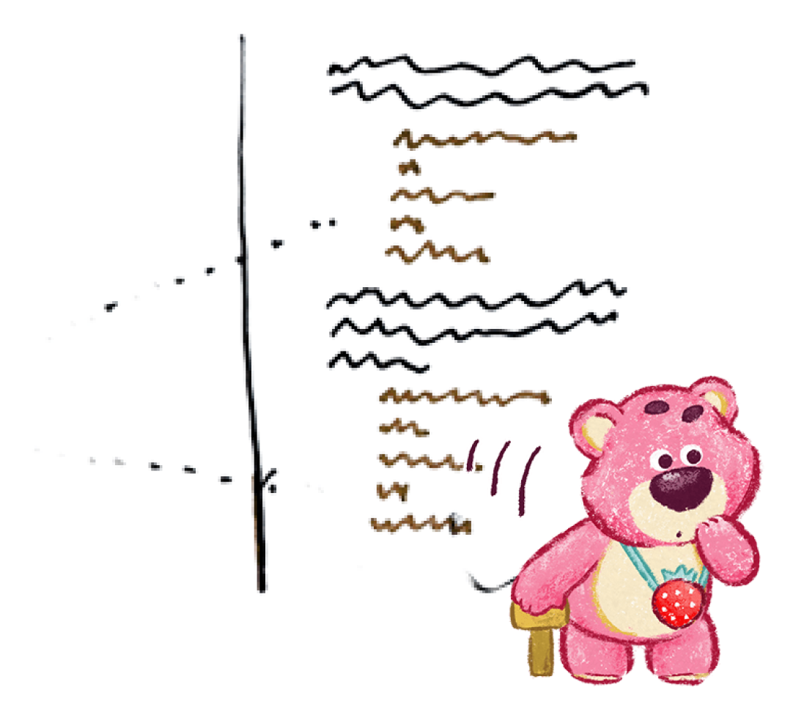
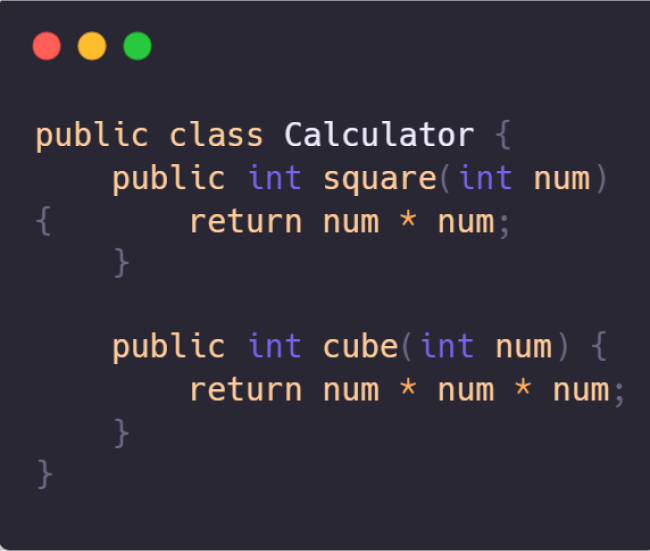
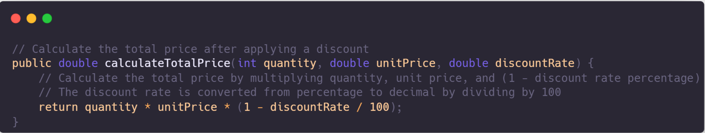

Duplicate code is a prevalent code smell primarily because it occurs when identical code segments are replicated across various sections of an application. This redundancy not only complicates code maintenance but also elevates the likelihood of introducing errors and security flaws.
#2 Duplicate Code

example
Treatment
-
When duplicate code is within the same class:
- Utilize Extract Method to isolate the repeated code into its own method, and then call this method from both places where the duplicate code was initially found. -
If duplicate code exists in subclasses of the same level:
- Apply Extract Method to both subclasses, then employ Pull Up Field for any fields used in the extracted method to bring them up to a common superclass level. -
If duplicate code is within a constructor:
- Use Pull Up Constructor Body to consolidate the common constructor logic into a superclass if applicable. -
If the duplicate code is similar but not identical:
- Consider using Form Template Method to create a template method and allow subclasses to implement specific behaviors. -
If two methods perform the same task but with different algorithms:
- Choose the superior algorithm and apply Substitute Algorithm to ensure consistency across the codebase. -
When duplicate code is found across different classes:
- If classes aren't part of a hierarchy, utilize Extract Superclass to create a common superclass containing shared functionality.
- If creating a superclass is impractical, use Extract Class on one class and incorporate the new component into the other. -
For cases involving numerous conditional expressions:
- Apply Consolidate Conditional Expression to merge similar conditions, and then use Extract Method to encapsulate the condition logic into a separate, clearly named method. -
If the same code exists in all branches of a conditional expression:
- Remove the duplicate code from the condition tree using Consolidate Duplicate Conditional Fragments.

#1 Comment
Commenting out code is considered a code smell. While adding comments to explain logic is a commendable practice, leaving unnecessary over-explanatory comments is not a good thing.
Comments can sometimes serve as a way to mask or hide a bad code smell. When a piece of code is particularly convoluted, inefficient, or violates best practices, developers may add comments to explain its purpose or justify its presence. These comments might make the code appear more understandable or acceptable at first glance.
example
Treatment